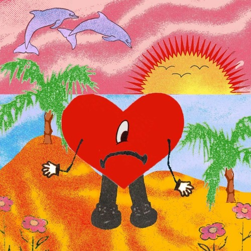
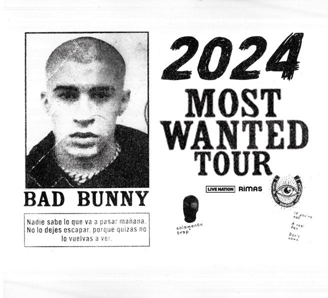
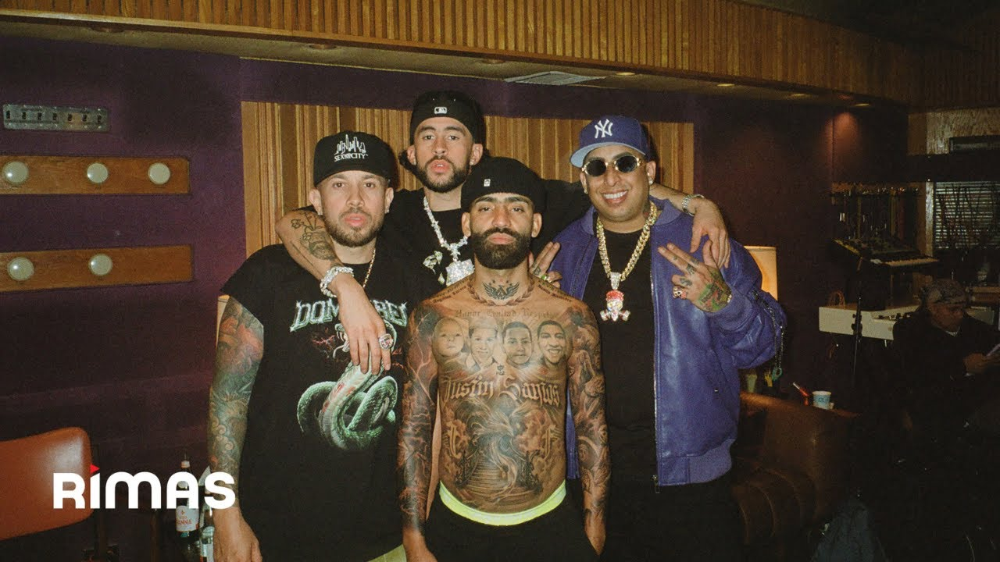

Bad Bunny
Año de inicio/finalización:
2013empezo a publicar sus canciones por medio de SoundCloud, entre ellas Get en 2013.
Canción Más Popular:
MÍA alcanzó el puesto número cinco en la lista estadounidense Billboard Hot 100, convirtiéndose en el primer top 10 de Bunny en la lista como artista principal junto a Drake.
10 canciones más escuchadas:


Álbum más escuchado/Vendido:
Un Verano Sin Ti es el cuarto álbum de estudio en solitario del cantante puertorriqueño Bad Bunny
Primer Concierto:
La Nueva Religión Tour fue la primera gira de conciertos del cantante Bad Bunny, la cual recorrió Latinoamérica, Norteamérica y Europa entre febrero y noviembre de 2018
Último concierto:
La gira Most Wanted, producida por Live Nation y Rimas, comenzará el 21 de febrero de 2024 en Salt Lake City y terminará el 26 de mayo en Miami.
Primera Canción:
Fue el 26 de agosto del 2016 cuando se publicó el tema “Diles” en plataformas, una colaboración entre Ozuna, Arcángel, Farruko, Bad Bunny y Ñengo Flow
Última canción:
ACHO PR fue la ultima cancion oficial hasta la fecha junto a Arcangel, De La Ghetto y Ñengo Flow.
Primer álbum:
El Conejo Malo fue su primer album focial en 2017 salio a la luz con 19 canciones.

Último álbum:
Nadie sabe lo que va a pasar mañana es el quinto álbum de estudio del cantante puertorriqueño Bad Bunny. El álbum fue publicado el viernes 13 de octubre de 2023 a través de Rimas Entertainment. Contiene colaboraciones con Arcángel, Bryant Myers, De la Ghetto, Eladio Carrión, Feid, Luar la L, Mora, Ñengo Flow, Young Miko, Tego Calderón y YovngChimi.

Biografía:
Benito Antonio Martínez Ocasio (Vega Baja, Puerto Rico 10 de marzo de 1994),2 conocido artísticamente como Bad Bunny, es un cantante, compositor, productor musical y peleador aficionado de lucha libre estadounidense3 Sus estilos musicales son generalmente definidos como reguetón, trap latino y baladas.